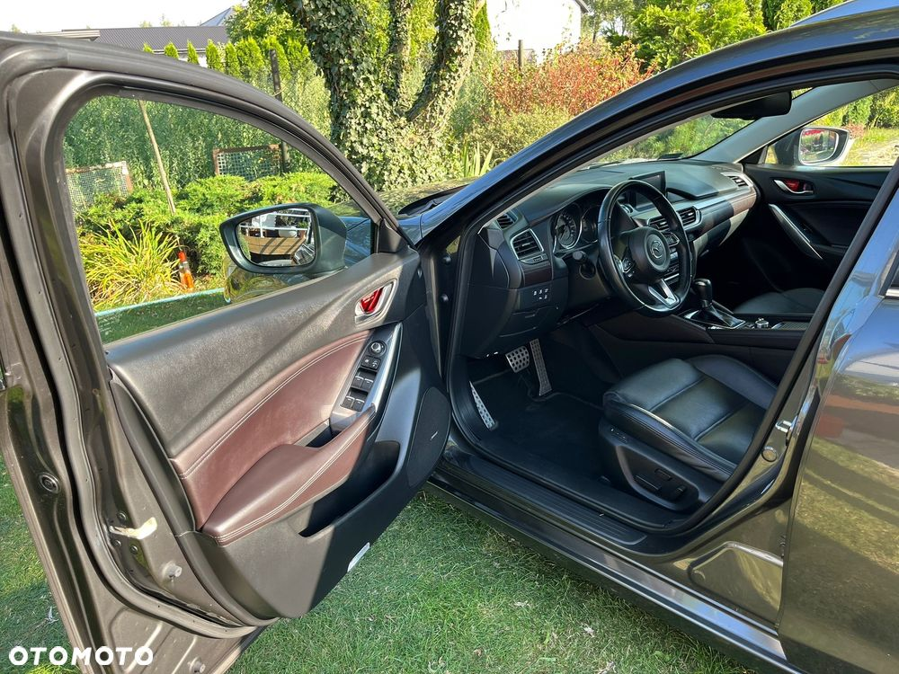
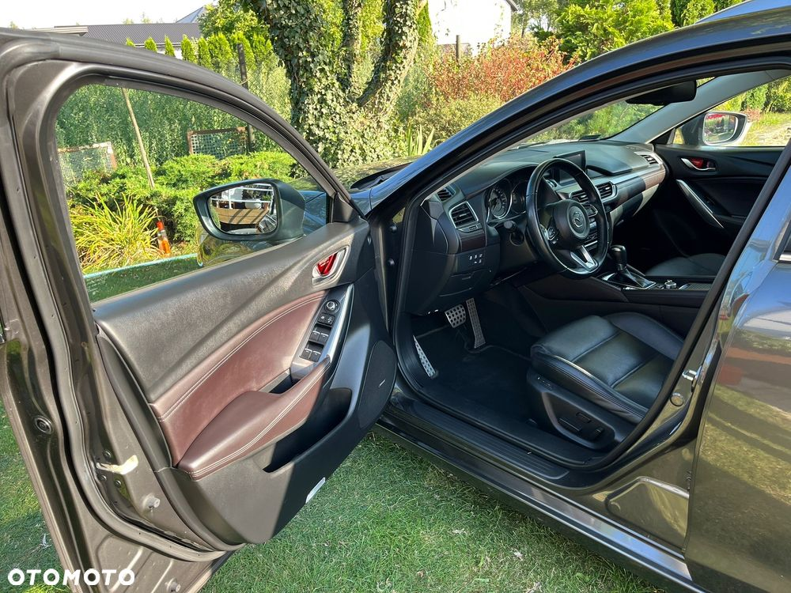
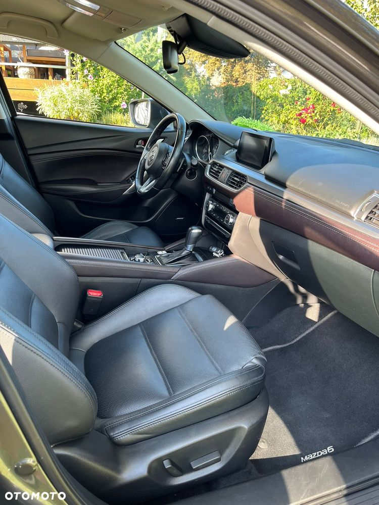
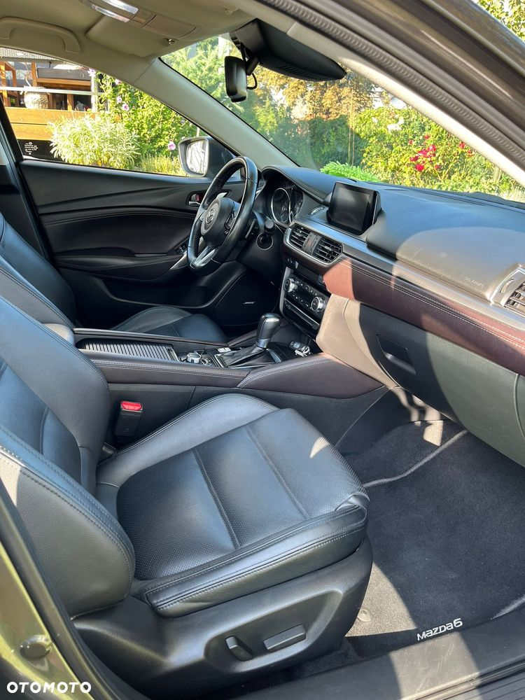

Mazdę odebrałem nową z salonu w styczniu 2018r. Poza maksymalnym wyposażeniem wyróżnia się dodatkami, które spersonalizował diler na moje życzenie. Auto w pięknym, głębokim 3 warstwowym lakierze z dodatkiem aluminium z palety premium Machine Grey - nosi normalne ślady użytkowania, 100% oryginalny bez jakiejkolwiek ingerencji poza woskami i szamponami. Mazda bez najmniejszej kolizji.
Serwisowana do dnia dzisiejszego w salonie ASO Mazda. Ostatnia wizyta 20 maj tego roku. Od serwisu przejechane 2000km, auto do maja 2026r. wciąż uczestniczy w programie Mazda Assistance.
Poza standardową obsługą okresową dodatkowo zostały wymienione klocki hamulcowe przód + tył, świece zapłonowe, które byłyby do wymiany, zgodnie z obsługą, za 10.000km. więc nowy nabywca ma z głowy. Paski klinowe wymienione na przeglądzie w ubiegłym roku. Wszystko potwierdzone fakturami i elektronicznym wpisem do książki serwisowej.
Dodatkowe wyposażenie dobrane do auta poza tym, które ma każda Mazda 6 2.5 Skypassion:
1. Układ hamulcowy:
- przód - jeden z najlepszych dostępnych zestawów tarcz marki DBA Street T2 + klocki EBC Yellowstuff (nowe)
- tył - tarcza OE Mazda + klocki EBC Greenstuff (nowe)
Gwarantuję nieporównywalnie skuteczniejsze hamowanie od OE Mazda.
2. Układ wydechowy:
- tłumik końcowy Sebring (dożywotnia gwarancja, większe końcówki) zmieniony przy zamówieniu nowego auta z katalogu Mazdy.
Charakterystyczny i spokojny dźwięk podkreślający auto.
3. Układ zawieszenia:
- zmienione sprężyny przy zamówieniu nowego auta z katalogu Mazdy na Eibach Pro-Kit -30mm.
Zapewniają stabilne prowadzenie przy zachowaniu idealnego komfortu i zdecydowanie poprawiają wygląd.
- oświetlenie powitalne z katalogu Mazdy.
- sportowe nakładki na pedały z katalogu Mazdy
- dodatkowe zabezpieczenie antykradzieżowe
- kilka innych drobnych dodatków.
Podsumuwując: Mazda bezkolizyjna, zadbana, 100% sprawna, serwisowana, wyróżniająca się wyglądem, skuteczniejszym hamowaniem, zdecydowanie lepszym brzmieniem i prowadzeniem od innych 6-stek. Komplet kluczyków i dokumentacji.
Ogłoszenie prywatne, umowa kupna sprzedaży.

 
 
